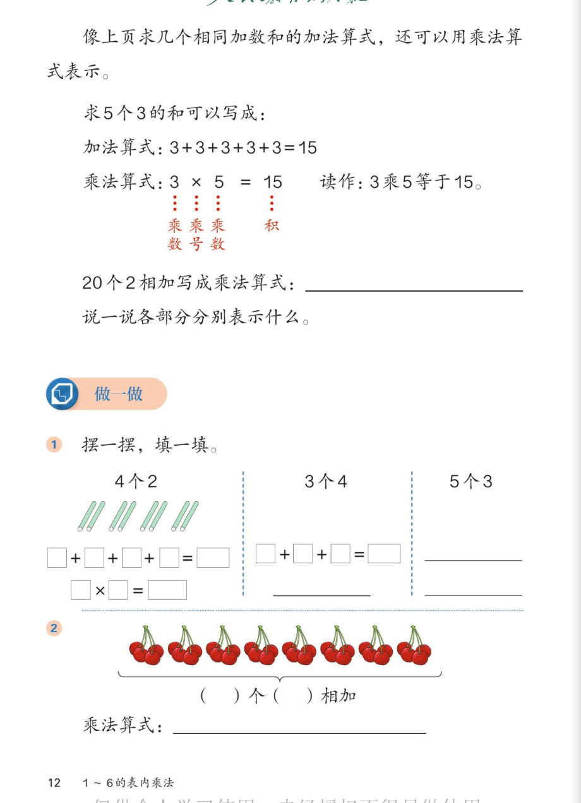

✖️ 1~6的表内乘法 · 课本第 12 页 · 乘法算式与做一做
人教版《数学》二年级上册 · 有声图文带读 · 先想后看解析
题数
6
认知
2
强化
3
拓展
1
本页重点
乘数、乘号、积
🎧 分两步学：
① 解析教材图片
——纯声音读图，读到哪一块哪一块闪动提示；关键处先倒计时让你思考，再在图片下方给出解析并朗读。
② 分层提问练习
——六道分层题（认知 / 强化 / 拓展），先思考再展开解析、朗读参考答案；这一步不再回到图片。
也可以随时点任意一句话、图上任意一块单独听；点课本文字卡还会展开答案。
教材图片（点块听读，读到哪块哪块闪）

📖 人教版《数学》二年级上册 · 课本第 12 页 · 图片仅供个人学习，版权归人民教育出版社所有
🤔 想一想（点我可跳过）
课本的文字（点句子：听读 + 看答案）
课本正文
像上页求几个相同加数的和的加法算式，还可以用
乘法算式
表示。
看答案 ▾
这句话是本页的钥匙：
只要是
加数相同
的加法，都可以改写成
乘法
——写起来又短又快。
条件再记一遍：
加数必须相同
。
课本例题
求 5 个 3 的和可以写成：加法算式 3+3+3+3+3=15；乘法算式 3×5=15，读作 3 乘 5 等于 15。
看答案 ▾
对照着看：
5 个 3 相加 → 乘法写成
3×5=15
。
读作：3 乘 5 等于 15。
（注意：乘号读"乘"，不读"乘以"）
各部分名称
乘数 × 乘号 × 乘数 ＝ 积
看答案 ▾
对照 3×5=15 记：
3 →
乘数
；× →
乘号
；5 →
乘数
；15 →
积
。
口诀记忆：
乘号前后来乘数，等号后面是积
。
课本填空
20 个 2 相加写成乘法算式：＿＿＿；说一说各部分分别表示什么。
看答案 ▾
答案：
2×20=40
（也可以写成
20×2=40
）。
各部分含义：
2 是
相同的加数
；20 是
加数的个数
；40 是
积
。
对比：加法要写 20 个 2，乘法只写 3 个数——简便多了！
做一做 1
摆一摆，填一填：4 个 2 → □+□+□+□=□、□×□=□
看答案 ▾
4 个 2（小棒图）：
加法
2+2+2+2=8
；乘法
2×4=8
（4 个 2 相加）。
乘法算式里：2 是相同加数，4 是个数，8 是积。
做一做 1
3 个 4 → □+□+□=□；5 个 3 → ＿＿＿
看答案 ▾
3 个 4：
加法
4+4+4=12
；乘法
4×3=12
。
5 个 3：
加法
3+3+3+3+3=15
；乘法
3×5=15
。
做一做 2
樱桃图：（ ）个（ ）相加；乘法算式：＿＿＿
看答案 ▾
数一数：
一共
8
把樱桃，每把
2
个 →
8 个 2 相加
。
乘法算式：
2×8=16
（也可以写 8×2=16）。
想想加法要多长：2+2+2+2+2+2+2+2=16——乘法一行就写完。
分层提问练习（先想后看解析）
📖
认知
3×5=15 读作什么？各部分叫什么名字？
看解析
🤔 想一想
解析：
读作：3 乘 5 等于 15
3、5 →
乘数
；× →
乘号
；15 →
积
💡 乘号前后来乘数，等号后面是积
✍️
认知
20 个 2 相加写成乘法算式，并说说各部分表示什么。
看解析
🤔 想一想
解析：
答案：
2×20=40（或 20×2=40）
2 → 相同的
加数
20 → 加数的
个数
40 →
积
🔁
强化
把加法算式改写成乘法：4+4+4；2+2+2+2+2+2。
看解析
🤔 想一想
解析：
4+4+4：
3 个 4 相加 →
4×3=12
2+2+2+2+2+2：
6 个 2 相加 →
2×6=12
🌈 方法：相同加数写前面，个数写后面
🤝
强化
3×4 和 4+4+4 有什么联系？3×4 还能表示别的意思吗？
看解析
🤔 想一想
解析：
联系：
3×4 就是 3 个 4 相加（4+4+4=12）
还能表示：
4 个 3 相加（3+3+3+3=12）
两种意思
得数都是 12
，都正确
🍒
强化
樱桃一共多少个？加法和乘法各怎么写？哪种简便？
看解析
🤔 想一想
解析：
加法：
2+2+2+2+2+2+2+2=16（8 个 2 相加）
乘法：
2×8=16
💡 乘法
短、快、不易错
——这就是乘法存在的理由
🚀
拓展
生活中的「几个几」用乘法写出来，举两个例子。
看解析
🤔 想一想
解析（开放题）：
例一：
每盒 6 支铅笔，3 盒 → 6×3=18。
例二：
每盘 4 个包子，5 盘 → 4×5=20。
🌈 先说"几个几"，再写乘法算式，说得合理都算对
① 解析教材图片
② 分层提问练习
⏹ 停止
纯声音 + 高亮跟随 · 想好才出解析
← 返回导航